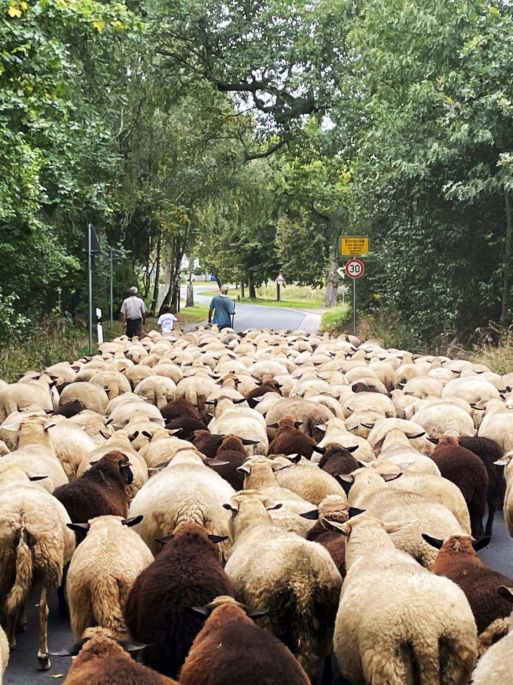
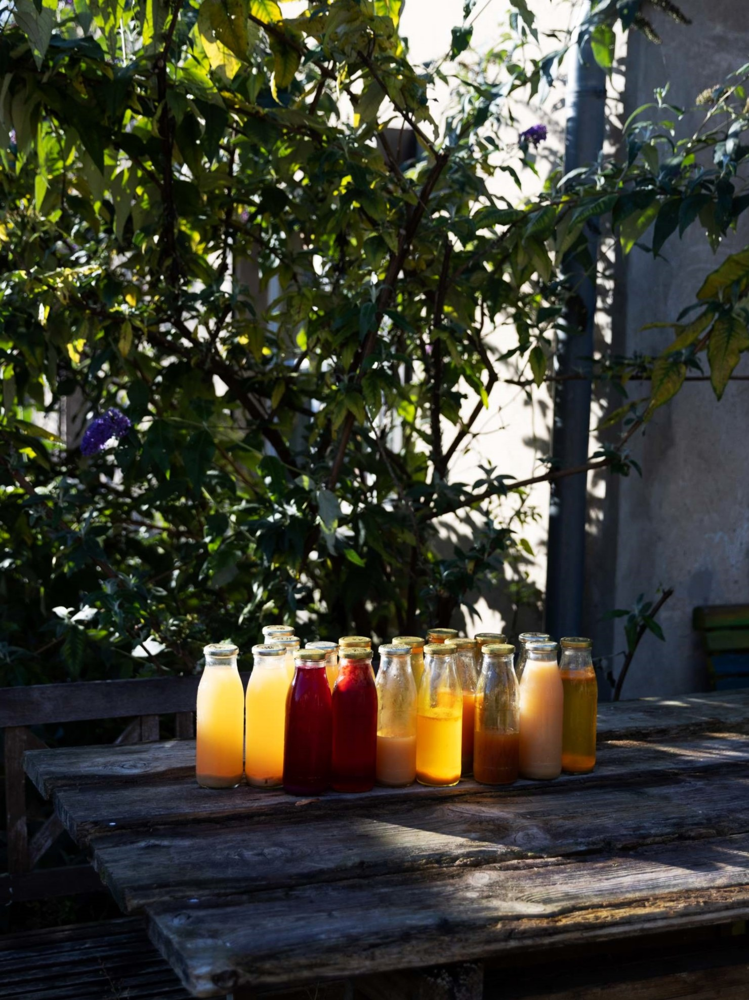
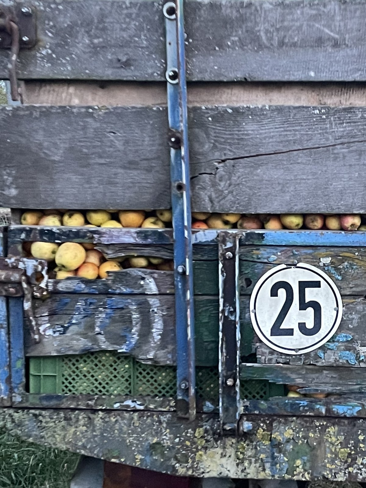
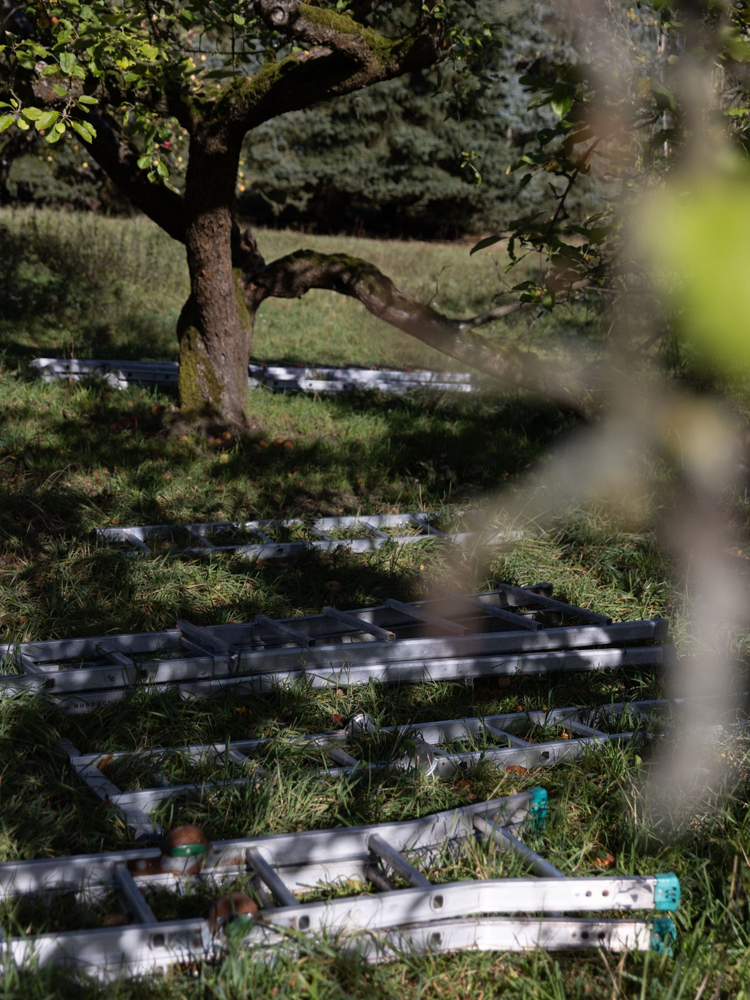
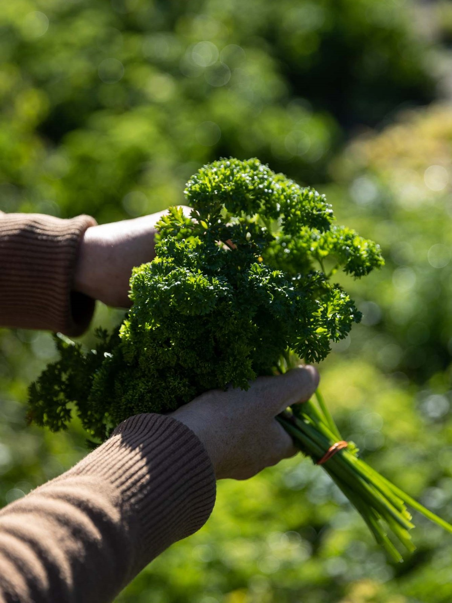
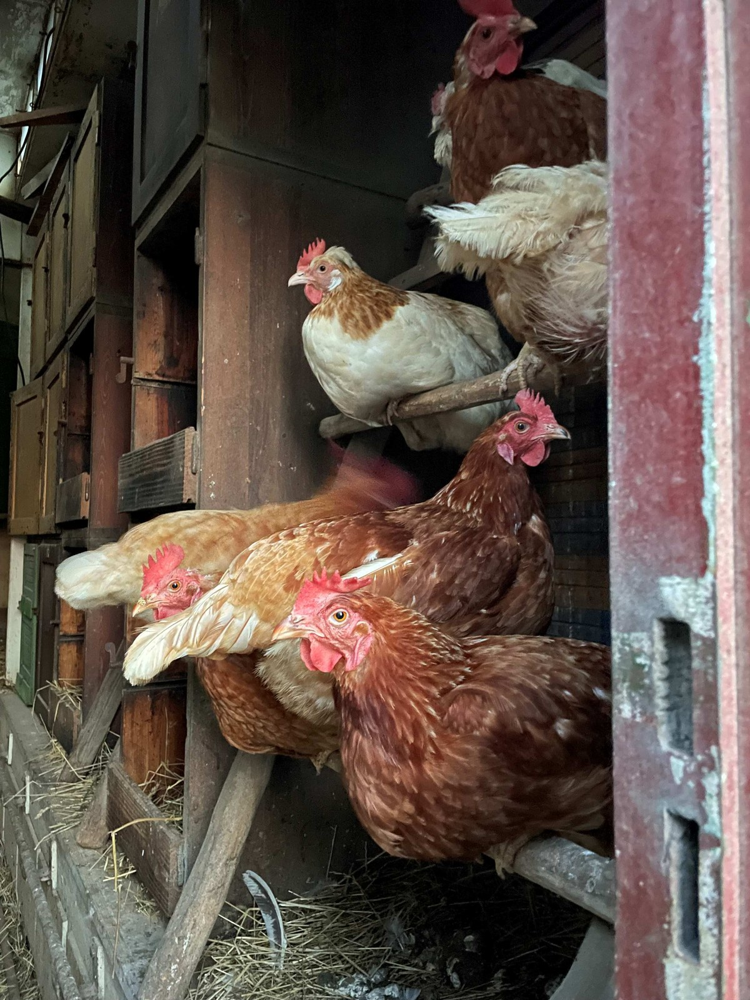
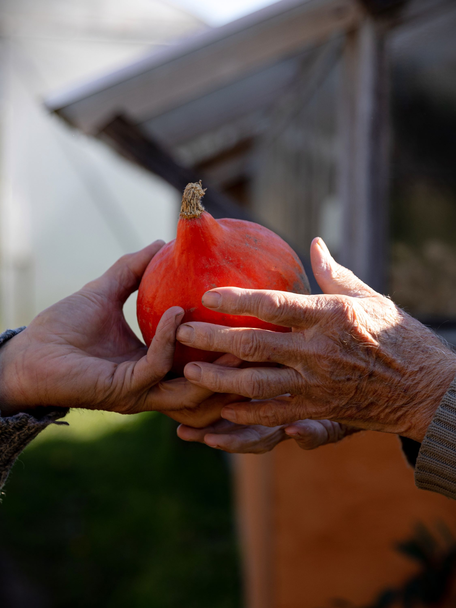
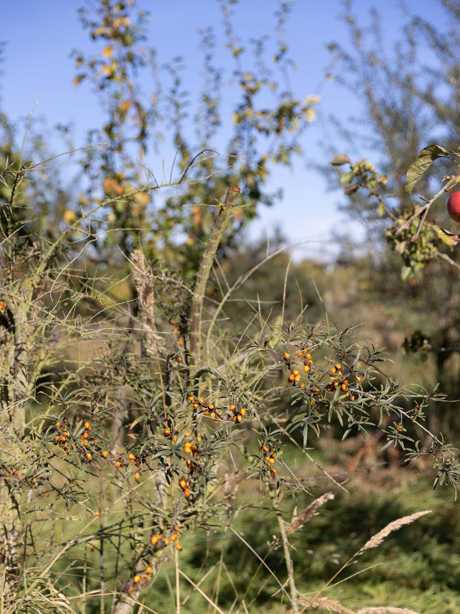
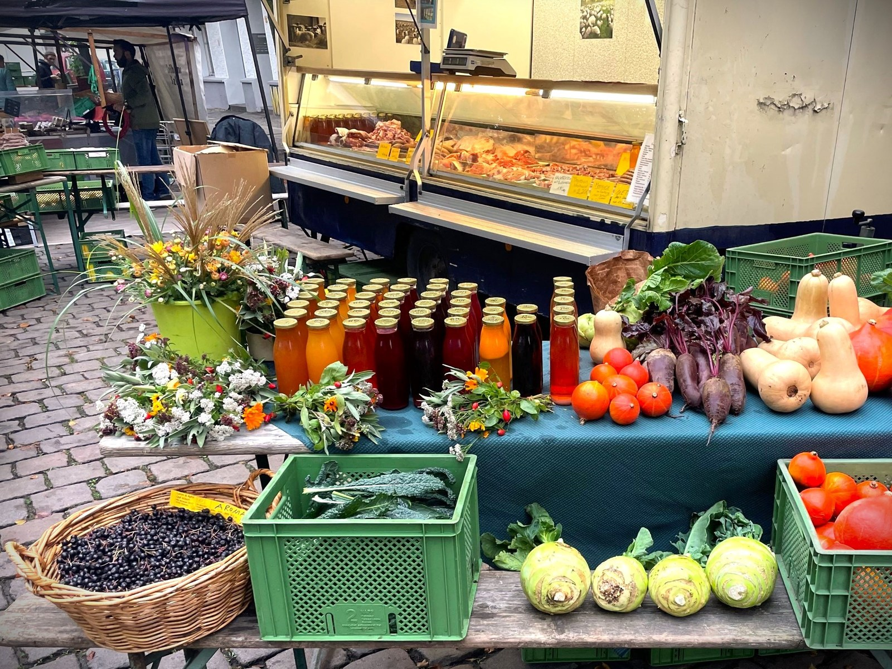

Rohsäfte

Äpfel für die Mosterei

Äpfel, alte Sorten

Frische Kräuter und Salate

Hühner in Freilandhaltung

Gemüse

Sanddorn und Aronia
Alle unsere Produkte stammen aus eigenem zertifizierten Bio-Anbau, eigener Schäferei sowie eigener Herstellung (Mosterei und Fleischerei). Verkauft werden alte Apfelsorten, Sanddorn, Aroniabeeren, Rohsäfte, Gemüse, Kräuter, Blumen, Eier aus Freilandhaltung, Lammfleisch, Wurstwaren, Felle, Wolle und Wollsocken aus hofeigener Schafwolle. Erhältlich sind unsere Produkte ab Hof in Elisenau (Ahrensfelde), in der Fleischerei in Rüdnitz sowie auf Wochenmärkten in Berlin.

Verkauf ab Hof
Alte Bernauer Straße 12
16356 Elisenau (Ahrensfelde)
Verkauf: Freitag 16:00 - 17:00
Fleischerei
Dorfstraße 22 (im Innenhof)
16321 Rüdnitz
Verkauf: Freitag 10:00 - 11:00
Märkte in Berlin
Ökomarkt Chamissoplatz
Chamissoplatz 6
10965 Berlin-Kreuzberg
Verkauf: Samstag 9:00 - 15:00
Wochenmarkt Boxhagener Platz
Ecke Krossener / Gärtnerstraße
10245 Berlin-Friedrichshain
Verkauf: Samstag 9:00 - 15:30
Fotografie: Scarlett Werth und Esther Morweiser